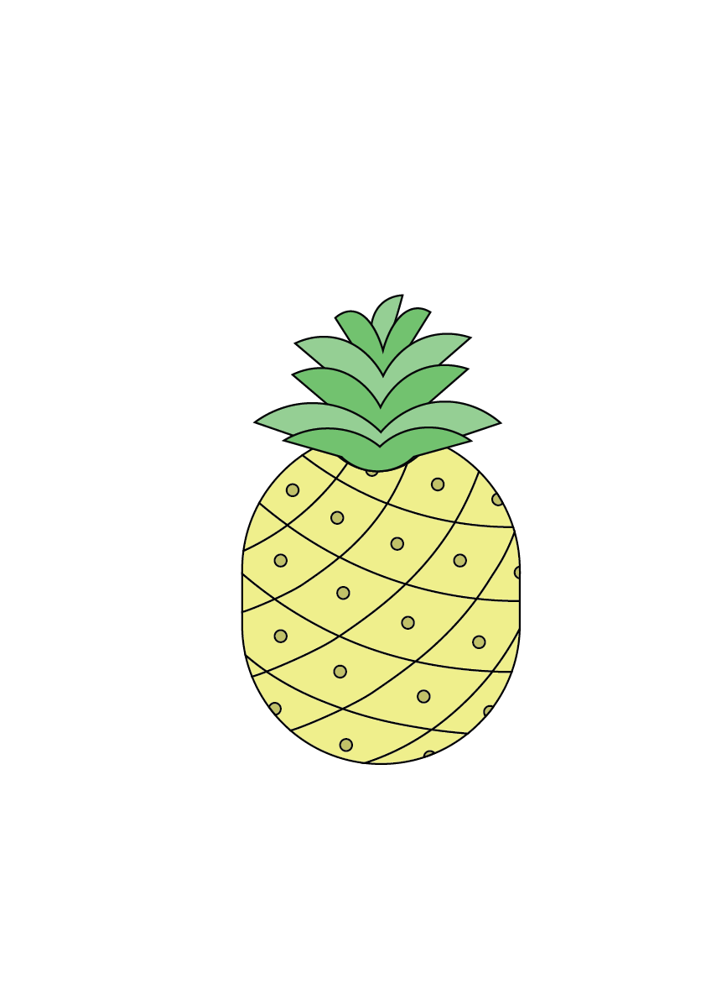
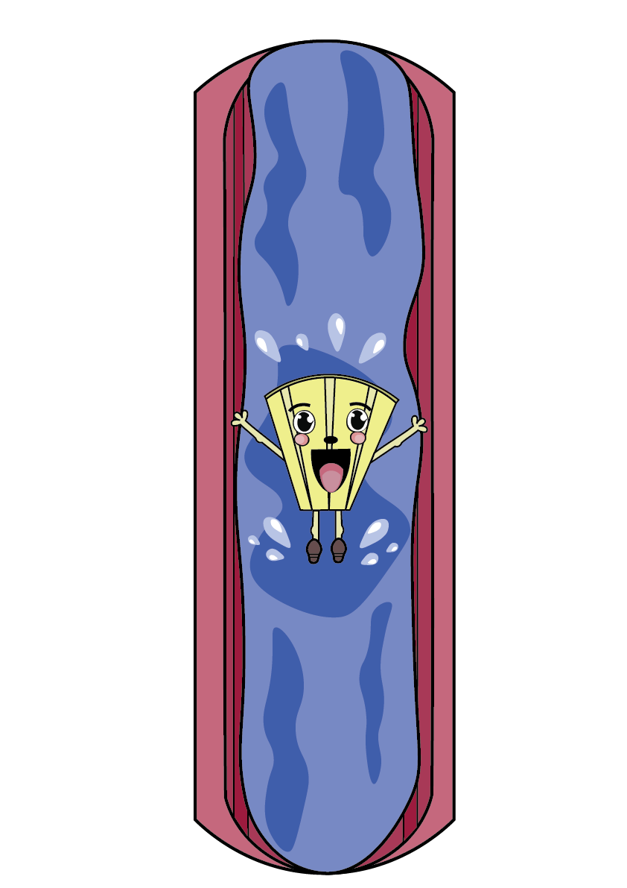
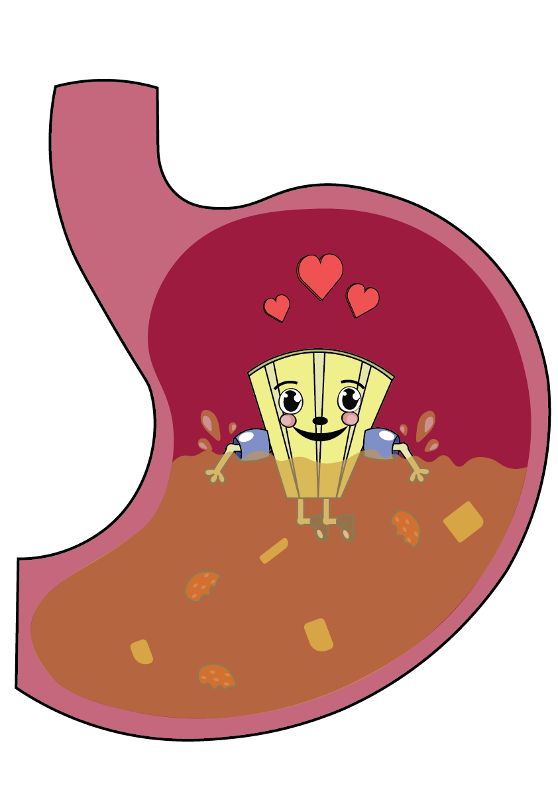

Vi nordmenn tok i 2017 verdensrekord i antall pizza konsumert per innbyggertall per år, med i snitt fem kilo per innbygger. Det er jentekvelder, vorspiel, gutta-stemning og lan. Pizza passer til det meste … men passer det meste på pizza?
Det kan bli høylytt når temaet tas opp. Ananas, eller ikke ananas – det er spørsmålet. Ødelagte vennskap og et blått øye, er det noe som får opp temperaturen rundt pizzabordet er det dette. Sinnakokker banner på tv og vennskap går tapt. En undersøkelse viser tydelig at publikum er delt i denne saken:
Så hvor kommer egentlig ananasen fra, og hvordan havnet den på en pizza? Denne bitre og sure frukten, som også er så gul og søt. Den eksotiske tropefrukten har feriert i kalde Norge en god stund, og kom for første gang på 1800-tallet. Den gang i form av ekstrakt og hermetikk. Hele planter og ananas kom senere. Ananasen vokser opp fra ananasplanten, og kan høstes hele året. Den dyrkes i dag også i Norge, og er dermed ikke like bereist som før.
Det viser seg altså at 59% av den norske befolkning liker ananas på pizza. Det var en Canadier som først fikk ideen. Sam Panopoulos drev den kinesiske restauranten Satellite Restaurant, og så hvordan folk koste seg med kombinasjonen av søtt og salt. Slik endte altså den søte gule på en ring av deig fra Italia. Resterende 41% må derfor fortsette å plukke av den bittersursøte gule saken på pizzaen sin.
De seirende 59% kan kose seg med bittersursøt pizzaglede
fra hånd til munn
fra munn til svelg
og fra svelg til mage.
Og slik utgjør ananasen sin mening med livet (i alle fall ifølge 59% av befolkningen), med alle de opplevelser det medfølger. Hvem hadde gjettet på 1800-tallet at den skulle bo i kalde Norge og sole seg på en pizzabunn for et kranglende publikum?